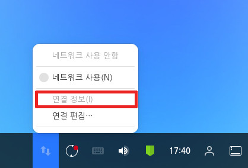
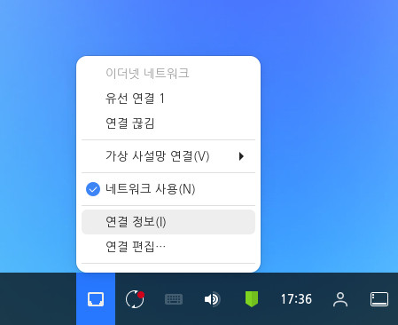
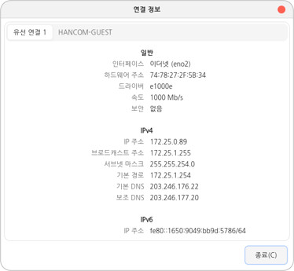
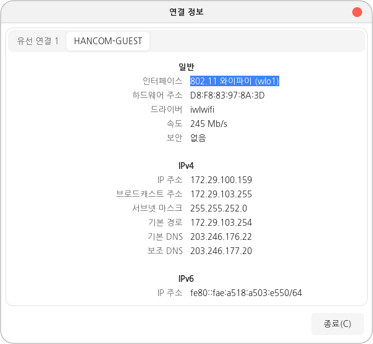

현재 사용자가 연결한 네트워크 연결 정보를 확인할 수 있습니다. 연결된 정보에서는 인터페이스, 하드웨어 주소, 드라이버, 속도, 보안, ip주소 등을 확인할 수 있습니다. 네트워크가 연결되어 있지 않은 경우 연결 정보를 확인할 수 없습니다. 다음 단계를 수행하여 네트워크 연결 정보를 확인합니다.1. 우측 하단의 [네트워크] (네트워크 미연결(유선 네트워크), (와이파이),
(네트워크 미연결)) 아이콘을 클릭하여 네트워크 메뉴를 엽니다. 네트워크가 연결된 경우 [연결 정보] 메뉴가 활성화됩니다.

네트워크 연결

2. [연결 정보] 메뉴를 클릭하여 연결 정보창을 확인합니다. 인터페이스, 하드웨어 주소, 드라이버, 속도, 보안, ip주소 등의 정보를 확인할 수 있습니다.1) 유선 네트워크

2) 와이파이

3. 우측 상단의 종료 또는 우측 하단의 [종료] 버튼을 눌러 연결 정보창을 닫을 수 있습니다.